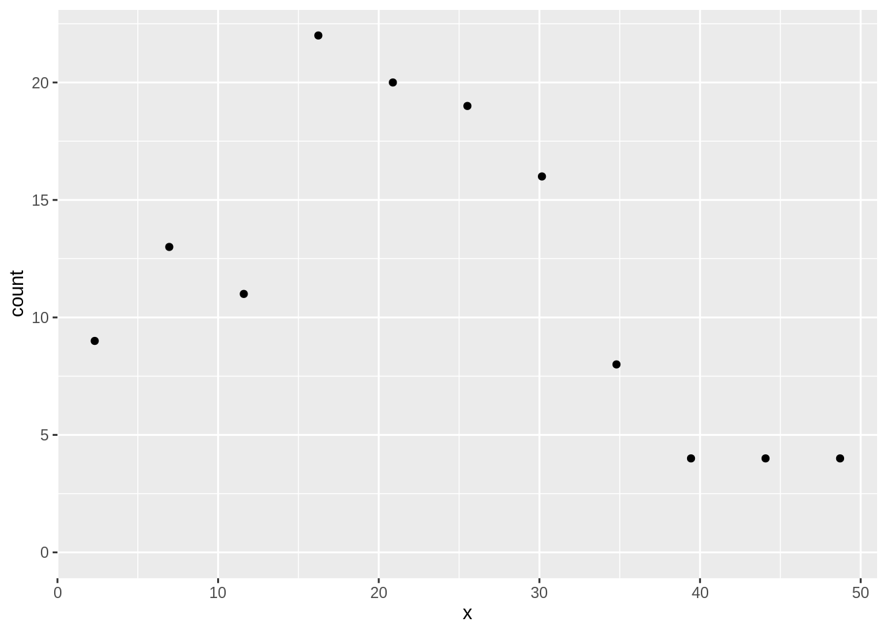
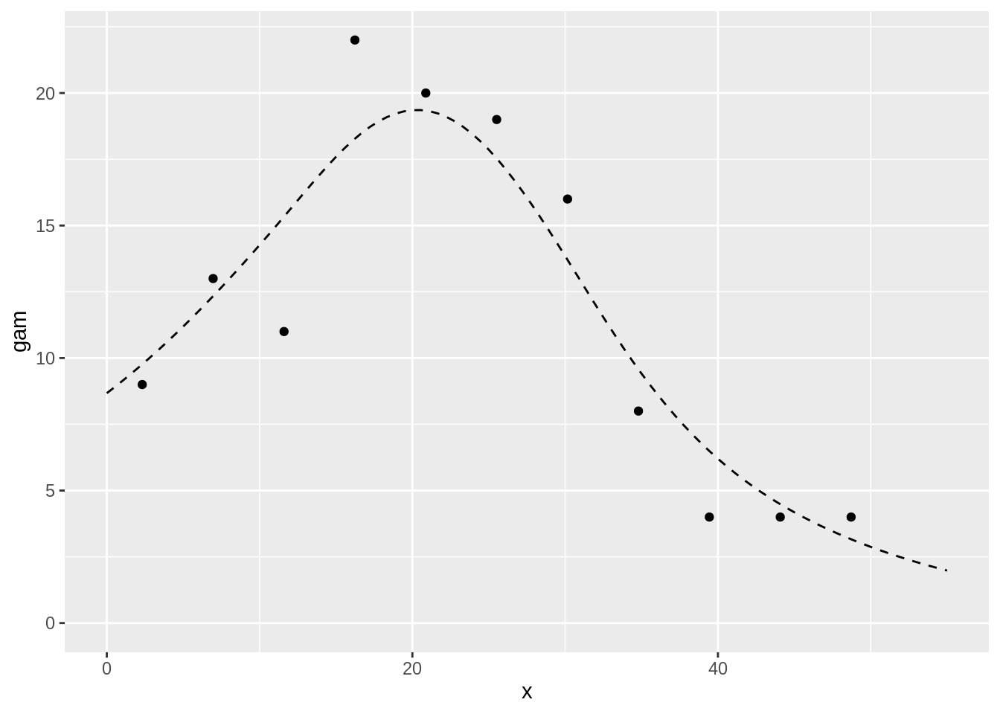
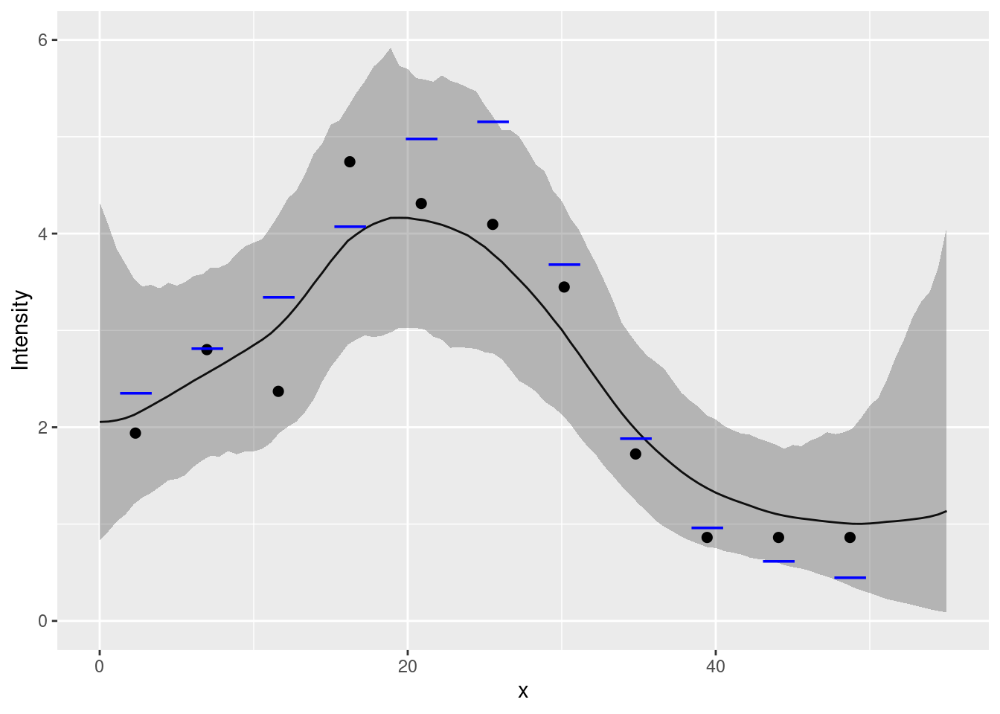
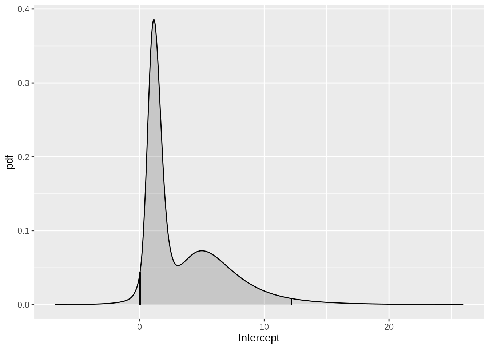
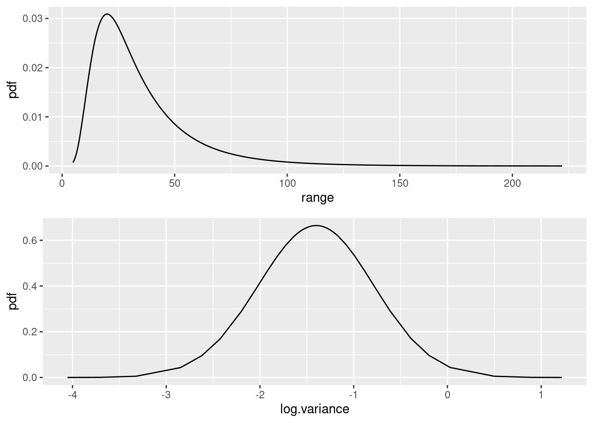
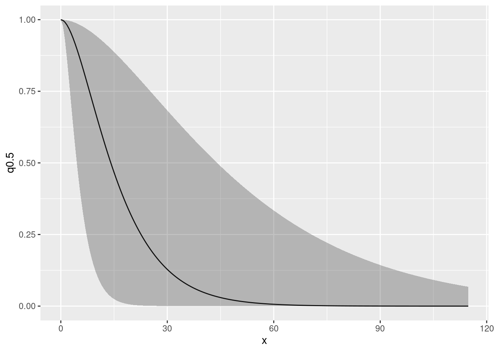
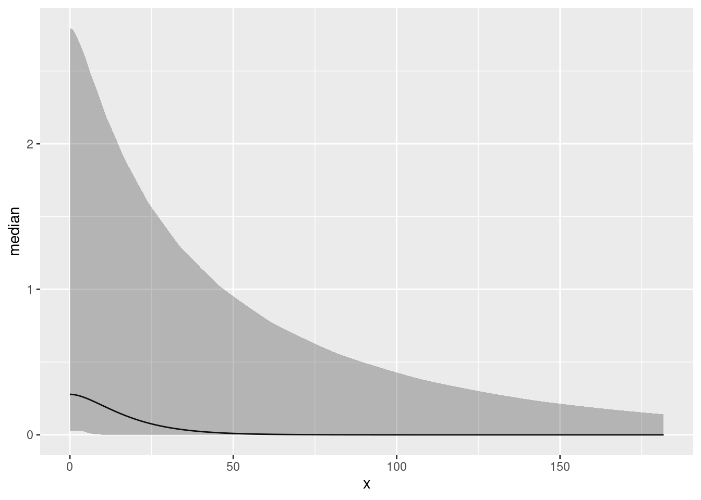

Random Fields in One Dimension
Finn Lindgren
Generated on 2022-12-01
Source:vignettes/web/random_fields.Rmd
random_fields.RmdSetting things up
Make a shortcut to a nicer colour scale:
colsc <- function(...) {
scale_fill_gradientn(
colours = rev(RColorBrewer::brewer.pal(11, "RdYlBu")),
limits = range(..., na.rm = TRUE)
)
}Get the data
data(Poisson2_1D)Put the count data in cd (just because ‘cd’
is less to type than ‘countdata2’.)
cd <- countdata2Take a look at the count data.
cd
#> x count exposure
#> 1 2.319888 9 4.639776
#> 2 6.959664 13 4.639776
#> 3 11.599439 11 4.639776
#> 4 16.239215 22 4.639776
#> 5 20.878991 20 4.639776
#> 6 25.518766 19 4.639776
#> 7 30.158542 16 4.639776
#> 8 34.798318 8 4.639776
#> 9 39.438093 4 4.639776
#> 10 44.077869 4 4.639776
#> 11 48.717645 4 4.639776
ggplot(cd) +
geom_point(aes(x, y = count)) +
ylim(0, max(cd$count))
Tip:
RStudio > Help > Cheatsheets > Data visualisation with ggplot2
is a useful reference for ggplot2 syntax.
Fitting a Generalised Additive Model (GAM)
If you’re not familiar with GAMs and the syntax of gam
don’t worry, the point of this is just to provide something to which we
can compare the inlabru model fit.
The term s(x,k=10) just specifies that as nonparametric
smooth function is to be fitted to the data, with no more than
10 degrees of freedom (df). (The larger the df, the more wiggly the
fitted curve (recall from the lecture that this is an effect of how some
spline methods are defined, without discretisation dependent penalty);
gam selects the ‘best’ df.) Notice the use of
offset=. (Refer to slides for an explanation of
offset.) The variable exposure in data frame
cd is the size of the bin in which each count was made.
You can look at the fitted model using summary( ) as
below if you want to, but you do not need to understand this output, or
the code that makes the predictions immediately below it if you are not
familiar with GAMs.
summary(fit2.gam)Make a prediction data frame, get predictions and add them to the data frame First make vectors of x-values and associated (equal) exposures:
and put them in a data frame:
dat4pred <- data.frame(x = xs, exposure = exposures)Then predict
pred2.gam <- predict(fit2.gam, newdata = dat4pred, type = "response")
dat4pred2 <- cbind(dat4pred, gam = pred2.gam) # add column for prediction in data framePloting the fit and the data using the ggplot2 commands
below should give you the plot shown below
ggplot(dat4pred2) +
geom_line(aes(x = x, y = gam), lty = 2) +
ylim(0, max(dat4pred2$gam, cd$count)) +
geom_point(aes(x = x, y = count), cd)
Fitting an SPDE model with inlabru
Make mesh. To avoid boundary effects in the region of interest, let the mesh extend outside the data range.
x <- seq(-10, 65, by = 1) # this sets mesh points - try others if you like
mesh1D <- inla.mesh.1d(x, boundary = "free")… and see where the mesh points are:
Using function bru( ) to fit to count data
We need to specify model components and a model formula in order to
fit it. This can be done inside the call to bru( ) but that
is a bit messy, so we’ll store it in comp first and then
pass that to bru( ).
Our response variable in the data frame cd is called
count so the model specification needs to have that on the
left of the ~. We add an intercept component with
+ Intercept(1) on the right hand side (all the models we
use have intercepts), and because we want to fit a Gaussian random field
(GRF), it must have a GRF specification. In inlabru the GRF
specification is a function, which allows the GRF to be calculated at
any point in space while inlabru is doing its
calculations.
The user gets to name the GRF function. The syntax is ‘myname(input, model= …)’, where:
- ‘myname’ is whatever you want to call the GRF (we called it
fieldbelow); -
inputspecifies the coordinates in which the GRF or SPDE ‘lives’. Here we are working in one dimension, and we called that dimensionxwhen we set up the data set. -
model=designates the type of effect, here an SPDE model object from theINLAfunctioninla.spde2.pcmatern( ), which requires a mesh to be passed to it, so we pass it the 1D mesh that we created above, `mesh1D.
For models that only adds the model components, we don’t need to
specify the full predictor formula. Instead, we can provide the name of
the output to the left of the ~ in the component
specification, and “.” on the right hand side, which will cause it to
add all components (unless a subset is selected via the
include/exclude arguments to
like()).
the_spde <- inla.spde2.pcmatern(mesh1D,
prior.range = c(1, 0.01),
prior.sigma = c(1, 0.01)
)
comp <- ~ field(x, model = the_spde) + Intercept(1, prec.linear = 1 / 2^2)
fit2.bru <- bru(
comp,
like(count ~ .,
data = cd,
family = "poisson",
E = exposure
)
)
summary(fit2.bru)
#> inlabru version: 2.6.0.9007
#> INLA version: 22.11.28-1
#> Components:
#> field: main = spde(x)
#> Intercept: main = linear(1)
#> Likelihoods:
#> Family: 'poisson'
#> Data class: 'data.frame'
#> Predictor: count ~ .
#> Time used:
#> Pre = 0.823, Running = 0.195, Post = 0.128, Total = 1.15
#> Fixed effects:
#> mean sd 0.025quant 0.5quant 0.975quant mode kld
#> Intercept 1.074 0.807 -0.003 0.885 3.396 0.794 0
#>
#> Random effects:
#> Name Model
#> field SPDE2 model
#>
#> Model hyperparameters:
#> mean sd 0.025quant 0.5quant 0.975quant mode
#> Range for field 31.746 19.751 9.033 26.874 83.475 19.49
#> Stdev for field 0.518 0.164 0.267 0.494 0.906 0.45
#>
#> Deviance Information Criterion (DIC) ...............: 60.01
#> Deviance Information Criterion (DIC, saturated) ....: 14.36
#> Effective number of parameters .....................: 5.42
#>
#> Watanabe-Akaike information criterion (WAIC) ...: 58.15
#> Effective number of parameters .................: 2.79
#>
#> Marginal log-Likelihood: -36.81
#> is computed
#> Posterior summaries for the linear predictor and the fitted values are computed
#> (Posterior marginals needs also 'control.compute=list(return.marginals.predictor=TRUE)')Predict the values at the x points used for mesh (the data argument
must be a data frame, see ?predict.bru):
x4pred <- data.frame(x = xs)
pred2.bru <- predict(fit2.bru, x4pred, x ~ exp(field + Intercept), n.samples = 1000)Let’s do a plot to compare the fitted model to the true model. The
expected counts of the true model are stored in the variable
E_nc2 which comes with the dataset
Poisson2_1D. For ease of use in plotting with
ggplot2 (which needs a data frame), we create a data frame
which we call true.lambda, containing x- and
y variables as shown below.
Given that inlabru predictions are always on the
intensity function scale, do you understand why we divide the count by
cd$exposure? (We will in due course allow predictions on
the count scale as well.)
true.lambda <- data.frame(x = cd$x, y = E_nc2 / cd$exposure)These ggplot2 commands should generate the plot shown
below. It shows the true intensities as short horizontal blue lines, the
observed intensities as black dots, and the fitted intensity function as
a red curve, with 95% credible intervals shown as a light red band about
the curve.
ggplot() +
gg(pred2.bru) +
geom_point(data = cd, aes(x = x, y = count / exposure), cex = 2) +
geom_point(data = true.lambda, aes(x, y), pch = "_", cex = 9, col = "blue") +
coord_cartesian(xlim = c(0, 55), ylim = c(0, 6)) +
xlab("x") +
ylab("Intensity")
Compare the inlabru fit to the gam fit:
Looking at the posterior distributions
We can look at the Intercept posterior using the function
plot( ), as below.
plot(fit2.bru, "Intercept")
You have to know that there is a variable called
Intercept in order to use this function. To see what fixed
effect parameters’ posterior distributions are available to be plotted,
you can type
names(fit2.bru$marginals.fixed)This does not tell you about the SPDE parameters, and if you type
names(fit2.bru$marginals.random)
#> [1] "field"this just tells you that there is an SPDE in fit2.bru called ‘field’, it does not tell you what the associated parameter names are. The parameters that are used in estimation are cryptic – what we are interested in is the range and variance of the Matern covariance funcion, that are functions of the internal parameters. We can look at the posterior distributions of the range parameter and the log of the variance parameters as follows. (We look at the posterior of the log of the variance because the variance posterior is very skewed and so it is easier to view the log of the variance)
spde.range <- spde.posterior(fit2.bru, "field", what = "range")
spde.logvar <- spde.posterior(fit2.bru, "field", what = "log.variance")
range.plot <- plot(spde.range)
var.plot <- plot(spde.logvar)
multiplot(range.plot, var.plot)
We can look at the posterior distributions of the Matern correlatioin and covariance funcitons as follows:
plot(spde.posterior(fit2.bru, "field", what = "matern.correlation"))
plot(spde.posterior(fit2.bru, "field", what = "matern.covariance"))